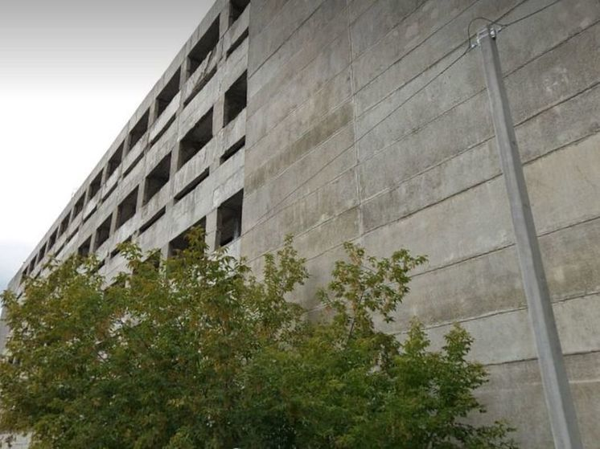

добро пожаловать на сайт заброшки омск!
На сайте "Заброшки Омск" вы можете найти множество актуальных заброшеных
объектов которые можно посетить на сегодняшний день!На сайте скоро появится
больше функционала, но пока что в нём мало что есть.Версия сайта 2.0 .Хост
сайта выполнен через сервис Github.Сайт НЕ ИСПОЛЬЗУЕТ личные данные пользователя,
НЕ ИСПОЛЬЗУЕТ файлы cookie.Надеюсь вам понравится данный сайт!
